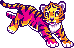
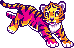

kumo's space
a personal digital haven
i ♡ little guys
my introduction to virtual pets was, for the most part, flight rising. i started playing the game in mid-2017... then took a long hiatus for ~3 years before returning in dec of 2023 (just in time for NOTN). it was a little harder to get back into the game with all that i had missed, but i'm very glad i came back, and i somewhat regret taking such a long hiatus. since i returned, i've been playing daily, and base most of my commissions out of the site. it means a lot to me ♡ wind on top!!!
aside from flight rising, i've been on-and-off running tamagotchis as i have the time. my personal favorites are by far the pix party and the keitai akai! my pix party has been the one i've been running the longest, though i often take breaks from it (by taking the batteries out to pause it). she's a ninjanyatchi that i call shinobu, and she's over 100 in-game years old (*￣▽￣)b
i'll also use this page for little adoptables storage... don't mind me hehe
(っ˘ω˘ς) hugging my pixel pets (ς˘ω˘っ)
 
